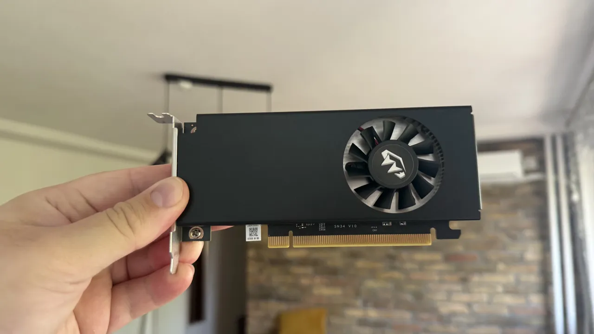

← все заметки
12.10.2026#железо #mini-pc
А также до меня добралась видеокарта. Я уже наиграл на ней несколько десятков часов. Из минусов только теплопакет в 60w. Я надеялся на 70–75. Заработала почти без бубна — только добавил в официальные драйвера свой айдишник карты. Мощностей хватает на ограниченный 4к (условные оптимизированные игры на CryEngine). DLSS работает. Будто бы еще немного мощности было бы совсем круто. Уже думаю про китайскую 4060lp на замену моей A2000. Но возможно стоит подождать, когда пойдут франкенштейны на 5000 серии :D

Комментарии